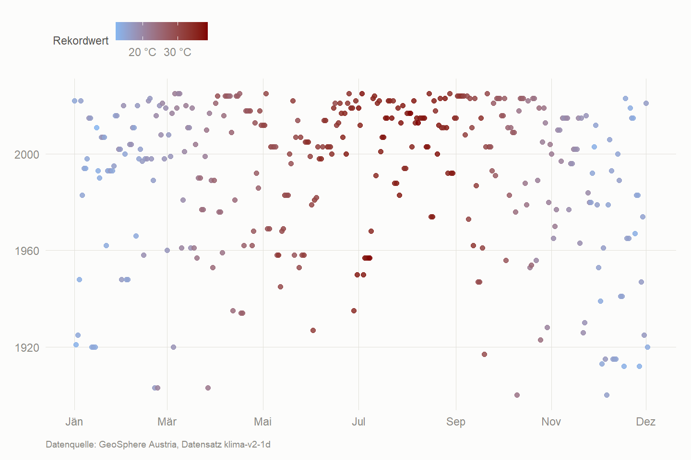

Was Tagesdaten zeigen, das Jahresmittel verschweigen
Die vorige Seite arbeitet mit Jahresmitteln. Für den langen Trend ist das die richtige Größe, aber Jahresmittel sind abstrakt — „plus zwei Grad” kann sich niemand vorstellen.
Tagesdaten können etwas anderes: Sie zählen Ereignisse. Hitzetage, Tropennächte, Frostnächte. Das sind Zahlen, die man spürt.
Die Messreihe stammt wieder von GeoSphere Austria, diesmal aus dem Datensatz klima-v2-1d. Er liefert für jeden einzelnen Tag das Temperaturmaximum und -minimum — für Wien-Hohe Warte zurück bis an den Anfang des 20. Jahrhunderts.
Code
WIEN <-105# Achtung: in HISTALP hat dieselbe Station die Nummer 152tage <-klima_tag(WIEN, c("tlmax", "tlmin")) |>rename_with(tolower) |>mutate(datum =as.Date(substr(as.character(time), 1, 10)),jahr =as.integer(format(datum, "%Y")),monat =as.integer(format(datum, "%m")),tag_im_jahr =as.integer(format(datum, "%j")) ) |>filter(!is.na(datum)) |>select(datum, jahr, monat, tag_im_jahr, tmax = tlmax, tmin = tlmin)# Nur Jahre mit halbwegs vollständiger Messreihe behalten - sonst# zählen Lückenjahre zu wenige Hitzetage und täuschen einen Trend vor,# der nur aus fehlenden Messungen besteht.vollstaendig <- tage |>summarise(n =sum(!is.na(tmax)), .by = jahr) |>filter(n >=350) |>pull(jahr)tage <- tage |>filter(jahr %in% vollstaendig)ZEITRAUM <-paste0(min(tage$jahr), " bis ", max(tage$jahr))
Ausgewertet werden 46.021 Tageswerte aus den Jahren 1900 bis 2025.
Drei Zahlen, die man spürt
Die Meteorologie hat dafür feste Schwellen:
Kennzahl
Bedingung
Sommertag
Tagesmaximum erreicht 25 °C
Hitzetag
Tagesmaximum erreicht 30 °C
Tropennacht
Das Minimum fällt nachts nicht unter 20 °C
Die Tropennächte sind dabei das Eindrucksvollste — und das gesundheitlich Relevante. Wenn es nachts nicht abkühlt, erholt sich der Kreislauf nicht.
Figure 1: Anzahl der Tage pro Jahr, die die jeweilige Schwelle erreichen. Die Linie ist eine Glättung über rund zehn Jahre.
Code
kennzahlen |>mutate(periode =case_when( jahr <=min(jahr) +29~"erste 30 Jahre", jahr >=max(jahr) -29~"letzte 30 Jahre")) |>filter(!is.na(periode)) |>summarise(wert =round(mean(anzahl), 1), .by =c(kennzahl, periode)) |>pivot_wider(names_from = periode, values_from = wert) |>rename(Kennzahl = kennzahl) |> knitr::kable(caption ="Durchschnittliche Anzahl pro Jahr, Anfang und Ende der Messreihe.")
Durchschnittliche Anzahl pro Jahr, Anfang und Ende der Messreihe.
Kennzahl
erste 30 Jahre
letzte 30 Jahre
Sommertage
32.2
76.3
Hitzetage
2.3
22.9
Tropennächte
0.7
7.6
Das frostfreie Jahr wird länger
Für jedes Jahr lässt sich bestimmen, wann der letzte Frost im Frühjahr fiel und wann der erste im Herbst kam. Dazwischen liegt die frostfreie Zeit — in der Landwirtschaft die Vegetationsperiode.
Als Band gezeichnet sieht man, wie sich beide Ränder auseinanderbewegen.
Figure 2: Letzter Frost im Frühjahr und erster Frost im Herbst. Die grüne Fläche ist die frostfreie Zeit.
Code
frost |>mutate(periode =case_when( jahr <=min(jahr) +29~"erste 30 Jahre", jahr >=max(jahr) -29~"letzte 30 Jahre")) |>filter(!is.na(periode)) |>summarise(`Letzter Frost im Frühjahr`=tag_label(round(mean(letzter_fruehling))),`Erster Frost im Herbst`=tag_label(round(mean(erster_herbst))),`Frostfreie Tage`=round(mean(frostfrei)),.by = periode) |>rename(Zeitraum = periode) |> knitr::kable(caption ="Im Mittel über je 30 Jahre.")
Im Mittel über je 30 Jahre.
Zeitraum
Letzter Frost im Frühjahr
Erster Frost im Herbst
Frostfreie Tage
erste 30 Jahre
06. Apr
04. Nov
212
letzte 30 Jahre
27. Mär
11. Nov
229
Nicht jeder Monat erwärmt sich gleich
Die Erwärmung verteilt sich nicht gleichmäßig über das Jahr — eine der weniger bekannten Eigenheiten des Klimawandels. Für jeden Kalendermonat ist hier die Steigung einer linearen Regression berechnet: um wie viel Grad pro Jahrzehnt dieser Monat wärmer geworden ist.
Als Kreis dargestellt, weil das Jahr ein Kreis ist.
Figure 3: Temperaturanstieg je Jahrzehnt, nach Kalendermonat.
Die Jahreskurve ist verrutscht
Legt man den mittleren Temperaturverlauf der ersten dreißig Jahre über den der letzten dreißig, sieht man nicht nur, dass die Kurve höher liegt. Sie ist auch seitlich verschoben: Eine bestimmte Frühlingstemperatur wird heute früher im Jahr erreicht als damals.
Figure 4: Mittlerer Temperaturverlauf über das Jahr, je 30 Jahre gemittelt und über 15 Tage geglättet.
Wie groß ist diese seitliche Verschiebung? Für jeden Frühlingstag lässt sich fragen: An welchem Tag hatte es früher jene Temperatur, die heute an diesem Tag herrscht?
Code
fruehjahr <- verlauf |>pivot_wider(names_from = epoche, values_from = temp) |># Umlaut-Spaltennamen vermeiden, die machen beim Rechnen nur Ärgerrename(temp_frueher =`früher`, temp_heute =`heute`) |>filter(between(tag_im_jahr, 60, 180),!is.na(temp_frueher), !is.na(temp_heute))tag_gleicher_temp <-function(zieltemp) { fruehjahr$tag_im_jahr[which.min(abs(fruehjahr$temp_frueher - zieltemp))]}verschiebung <- fruehjahr |>mutate(tag_frueher =map_dbl(temp_heute, tag_gleicher_temp),tage_frueher = tag_frueher - tag_im_jahr) |># Randtage aussortieren: Liegt die heutige Temperatur außerhalb dessen,# was früher im Fenster vorkam, landet which.min am Rand und der Wert# ist keine echte Entsprechung.filter(tag_frueher >min(tag_im_jahr), tag_frueher <max(tag_im_jahr))tibble(`Zeitraum Frühjahr`="März bis Juni",`Dieselbe Temperatur wird heute erreicht`=paste0(round(mean(verschiebung$tage_frueher)), " Tage früher"),`verglichen mit`=paste0(min(frueh), "–", max(frueh))) |> knitr::kable()
Zeitraum Frühjahr
Dieselbe Temperatur wird heute erreicht
verglichen mit
März bis Juni
16 Tage früher
1900–1929
Wann die Tagesrekorde fielen
In einem stabilen Klima werden Rekorde mit der Zeit seltener — schlicht, weil es schwerer wird, einen alten Bestwert zu übertreffen, je länger die Messreihe ist. Nach 126 Jahren sollte ein neuer Tagesrekord die Ausnahme sein.
Die Grafik zeigt für jeden Kalendertag, in welchem Jahr der bis heute gültige Höchstwert gemessen wurde. Wenn sich die Punkte im oberen Bereich ballen, ist das ein Signal.
Code
rekorde <- tage |>filter(!is.na(tmax)) |>slice_max(tmax, n =1, by = tag_im_jahr, with_ties =FALSE) |>select(tag_im_jahr, rekord_jahr = jahr, rekord_temp = tmax)ggplot(rekorde, aes(tag_im_jahr, rekord_jahr, color = rekord_temp)) +geom_point(size =2, alpha =0.85) +scale_color_gradient(low = MILD, high = HEISS, name ="Rekordwert",labels = \(x) paste0(x, " °C")) +scale_x_continuous(breaks = MONATSACHSE$breaks, labels = MONATSACHSE$labels) +labs(x =NULL, y =NULL, caption = QUELLE_TAG) +theme_at()

Figure 5: Für jeden Kalendertag das Jahr, in dem der bis heute gültige Höchstwert fiel.
Code
n_jahre <-diff(range(tage$jahr)) +1grenze <-max(tage$jahr) -24tibble(`Länge der Messreihe`=paste0(n_jahre, " Jahre"),`Anteil der letzten 25 Jahre`=paste0(round(25/ n_jahre *100), " %"),`davon stammende Tagesrekorde`=paste0(round(mean(rekorde$rekord_jahr >= grenze) *100), " %")) |> knitr::kable()
Länge der Messreihe
Anteil der letzten 25 Jahre
davon stammende Tagesrekorde
126 Jahre
20 %
53 %
Warum eine einzelne Station?
Alle Auswertungen hier stammen von Wien-Hohe Warte. Das ist Absicht: Schwellen wie „30 Grad” lassen sich nicht über Stationen mitteln, ohne dass die Zahl ihre Bedeutung verliert — der Sonnblick auf 3.109 Metern hat schlicht keine Hitzetage.
Wer eine andere Station sehen will, ändert in extreme.qmd die Zeile WIEN <- 105. Die Alternativen stehen in R/setup.R unter KLIMA_STATIONEN. Der Sonnblick ist als Kontrast interessant: Dort gibt es keine Hitzetage, dafür ist der Rückgang der Frostnächte umso deutlicher.